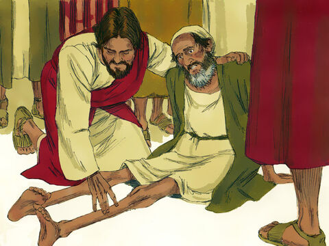

Lord Jesus Feeds The Five Thousand
When Jesus heard of it, he departed thence by ship into a desert place apart:
and when the people had heard thereof, they followed him on foot out of the cities.
And Jesus went forth, and saw a great multitude, and was moved with compassion toward them,
and he healed their sick.
And when it was evening, his disciples came to him, saying, This is a desert place,
and the time is now past; send the multitude away, that they may go into the villages, and buy themselves victuals.
But Jesus said unto them, They need not depart; give ye them to eat.
And they say unto him, We have here but five loaves, and two fishes.
He said, Bring them hither to me.
And he commanded the multitude to sit down on the grass, and took the five loaves, and the two fishes, and looking up to heaven,
he blessed, and brake, and gave the loaves to his disciples, and the disciples to the multitude.
And they did all eat, and were filled: and they took up of the fragments that remained twelve baskets full.
And they that had eaten were about five thousand men, beside women and children.
Matthew 14:13-21

- 